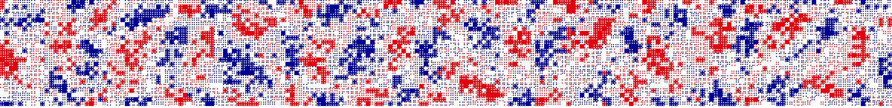
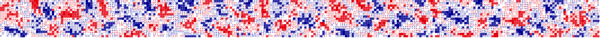

Élection présidentielle · 1er tour · 18 avril 2027
Les sondages, agrégés jour après jour, plus la dérive d'opinion d'ici au scrutin — calibrée sur les campagnes de 2017 et 2022.
Barre et chiffre = part moyenne · trait = IC 90 % · à droite, la probabilité d'être qualifié·e au 2nd tour et celle d'arriver en tête au 1er. Survolez une ligne pour voir la distribution complète.
Probabilité d'être au 2nd tour, ré-estimée à chaque nouveau sondage.
Points = sondages (part brute par institut) · ligne = estimation du modèle · bande = IC 90 % · cliquer un point → la notice source.
